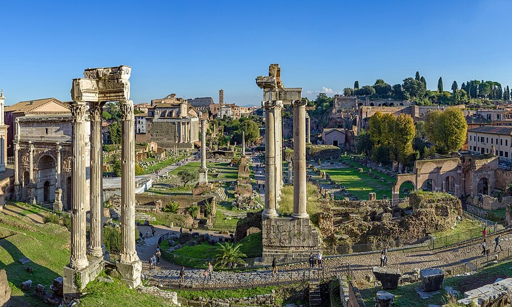

Perfect 3-Day Rome Itinerary 2026: Day-by-Day Plan for First-Time Visitors

Rome contains more UNESCO World Heritage Sites than any other city on Earth, and three days is just enough time to experience its full spectrum without the overwhelm. The biggest mistake first-time visitors make is cramming too many sights into a single day - and exhausting themselves so thoroughly that they remember nothing with joy. This 2026 itinerary is built around quality over quantity: two headline monuments per day, superb food in between, and a rhythm that leaves room for spontaneous discoveries down cobblestone alleys.
📋 Your 3-Day Plan
Before You Go: Essential Booking Checklist
Rome's top monuments regularly sell out weeks in advance during peak season (April–October). Book these before leaving home:
- 🎟 Colosseum skip-the-line tickets - minimum 2 weeks ahead in summer
- 🎟 Vatican Museums timed entry - minimum 3 weeks ahead (can sell out over a month in advance)
- 🎟 Borghese Gallery (optional, Day 3 variant) - strictly capped at 360 visitors per 2-hour slot; often sold out 3–4 weeks ahead
- 🕐 Check opening days: Vatican is closed most Sundays; Colosseum opens daily except Jan 1 & Dec 25
⚠️ Don't Combine These on the Same Day
The Vatican and Colosseum on the same day sounds efficient but leaves every visitor exhausted and rushed. They are on opposite sides of the Tiber River and each deserves a full half-day minimum. Trust the itinerary - separate days make both experiences infinitely more enjoyable.
Ancient Rome: Colosseum, Roman Forum & Palatine Hill
☕ Breakfast at Bar San Calisto or a Local Bar Near Your Hotel
🍕 EATStart with a Roman breakfast: a cornetto (croissant) and a cappuccino standing at the bar counter. Italians eat breakfast standing - sitting costs double. Budget €3–€4. Avoid hotels buffets near major monuments; they charge €15+ for mediocre food.
🏟 Colosseum: Priority Entry & Arena Floor
🏛 SEE 🎟 PRE-BOOKArrive at 9:00 AM sharp with pre-booked skip-the-line tickets. Enter via the priority fast-track gate. Start with Levels 1 and 2 (upper viewing rings), then descend to the Colosseum Museum on the upper tier. If you've booked the Arena Floor upgrade, stand on the gladiator stage at 9:30–10:00 AM before day-trip groups arrive. Allow 1.5–2 hours total.
🏛 Roman Forum & Palatine Hill: Full Archaeological Walk
🏛 SEEYour Colosseum ticket includes same-day access to the Roman Forum and Palatine Hill. Enter through the Forum gate on Via Sacra. Walk past Julius Caesar's cremation site, the Senate Curia, the Temple of Vesta, the Arch of Titus, and the Basilica of Maxentius. Climb Palatine Hill via the Farnese Gardens for panoramic views of the Forum below and the Circus Maximus valley. Allow 1.5–2 hours.
🍕 Lunch in Rione Monti: Rome's Coolest Neighbourhood
🍕 EATWalk 10 minutes north from the Colosseum to Rione Monti, a bohemian neighbourhood of vintage shops and authentic trattorias. Try Trattoria da Valentino (Via del Boschetto) for cacio e pepe at €10–€12, or grab street food at the Monti Market. Avoid all restaurants directly facing the Colosseum - €20+ for pasta of tourist quality.
🏠 Capitoline Hill & Piazza Venezia: Free Afternoon Exploration
🏛 SEEWalk 15 minutes up to Capitoline Hill (designed by Michelangelo). Visit the free terrace for views overlooking the Forum. Descend to Piazza Venezia and walk the length of Corso Vittorio Emanuele II toward the historic center. Pop into any open Roman church - most are free and incredibly beautiful.
🍷 Dinner in Testaccio: Rome's Authentic Food District
🍕 EATTestaccio is Rome's historic butcher district and the best neighbourhood for authentic Roman food at non-tourist prices. Try Da Remo for thin-crust Roman pizza, or Osteria Degli Amici for classic offal dishes (tripe, oxtail). Budget €20–€35 for a full dinner with wine.
Vatican & Renaissance Rome: Sistine Chapel & St. Peter's
☕ Espresso near the Vatican Quarter (Prati)
🍕 EATThe Prati neighbourhood around the Vatican is Rome's most elegant residential district, full of excellent bars. Excellent choice: Caffè Romoli on Via Cola di Rienzo for a proper Roman cornetto and coffee at local prices (€2.50 for both at the counter).
✍️ Vatican Museums & Sistine Chapel: Full Guided Experience
🏛 SEE 🎟 PRE-BOOKThe Vatican Museums at 9:00 AM are the calmest they will be all day. Enter via your pre-booked priority gate on Viale Vaticano. Follow the standard route: Egyptian Museum → Museo Pio-Clementino (Laocoön sculpture) → Gallery of Maps → Raphael Rooms → Sistine Chapel. Sit on the wall benches in the Sistine to properly absorb Michelangelo's ceiling. Allow 3 hours minimum.
⚰️ St. Peter's Basilica & Square: Free Entry
🏛 SEEFrom the Vatican Museums, enter St. Peter's Basilica through the museums' privileged corridor. Admire Michelangelo's Pietà (behind bullet-proof glass since a 1972 attack), Bernini's bronze Baldacchino over the papal altar, and the stunning interior nave. Climb the cupola (dome) for panoramic views across Rome (€8 by elevator; €6 by stairs, 551 steps).
🍕 Lunch in Borgo Pio: The Vatican's Charming Medieval Lane
🍕 EATThe cobblestone street of Borgo Pio runs parallel to the Vatican walls and is lined with genuinely good trattorias catering to locals and returning Vatican workers. Try Da Cesare for Roman classics at non-tourist prices. Budget €15–€22 for a full pasta and secondi lunch with house wine.
🏠 Castel Sant'Angelo: Rome's Most Misunderstood Monument
🏛 SEEA 10-minute walk from St. Peter's Square brings you to Castel Sant'Angelo, originally built as Emperor Hadrian's mausoleum in 139 AD and later converted into a papal fortress. Climb to the rooftop terrace for arguably the finest view in Rome: the Tiber River, St. Peter's dome, and the ancient city spread beneath you. Entry €15 / pre-book online to skip queues.
🍷 Dinner in Trastevere: Rome's Most Romantic Neighbourhood
🍕 EATCross the Tiber into Trastevere, Rome's most atmospheric medieval neighbourhood, with narrow lanes festooned with ivy and warm amber lighting. Try Tonnarello for classic Roman pasta dishes, or Da Enzo al 29 for elevated trattoria food. Book ahead - both are popular. Budget €25–€40 with wine.
Baroque Rome: Pantheon, Piazza Navona & Spanish Steps
◯ The Pantheon: The Best-Preserved Ancient Building in Rome
🏛 SEE 🎟 PRE-BOOK €5The Pantheon opens at 9:00 AM and is least crowded in the first 30 minutes. This perfectly preserved Roman temple (125 AD) features the largest unreinforced concrete dome in history - its 9-metre circular oculus is the building's only light source and also its rain drainage system. Pre-book timed entry online (€5 adults) - same-day tickets are often sold out by 10:30 AM.
🥮 Piazza Navona: Baroque Theatre at its Finest
🏛 SEEA 5-minute walk from the Pantheon brings you to Piazza Navona, built over the footprint of Domitian's ancient stadium (you can still see its oval shape). The centrepiece is Bernini's Fontana dei Quattro Fiumi (Fountain of the Four Rivers, 1651). No entry fee - simply walk in and stay as long as you like. The rival Borromini church of Sant'Agnese faces the fountain directly across the piazza.
🍕 Lunch at Mercato di Campo de' Fiori or Nearby
🍕 EATCampo de' Fiori hosts Rome's most vibrant daily market until 1:00 PM. Browse seasonal produce, olives, and freshly sliced porchetta, or grab a sandwich from a vendor and eat al fresco in the piazza (once home to public executions - the statue of Giordano Bruno marks where he was burned in 1600). Budget €5–€10 for street food lunch.
👑 Spanish Steps & Villa Borghese Park
🏛 SEETake Bus 40 or a 25-minute walk north to the Spanish Steps (Piazza di Spagna). Climb all 135 steps for views over the rooftops. Continue into the Villa Borghese park for a free afternoon stroll among pine trees, fountains, and street artists. If pre-booked: the Borghese Gallery (inside the park) houses Bernini's marble sculptures and Caravaggio paintings - Rome's most concentrated art treasure chest.
⛓️ Trevi Fountain: The Right Way to Visit
🏛 SEEThe Trevi Fountain is always crowded, but 5:30–6:30 PM on a weekday afternoon is marginally better than midday. Arrive, toss your coin (over your left shoulder with your right hand - legend says this guarantees your return to Rome), take your photos, and move on. Don't linger - the surrounding streets are Rome's most aggressively overpriced. Walk 10 minutes for a gelato instead.
🍷 Farewell Dinner: Your Best Meal in Rome
🍕 EATSplurge on your final night. Highly recommended: Osteria della Trippa (near Piazza Navona) for elevated Roman cuisine, or Il Sorpasso in Prati for modern Roman cicchetti-style dining at a bar counter. Reserve in advance. Budget €35–€55 per person with wine.
💡 Final Night Optional: Colosseum Illumination Walk
After dinner on Day 3, take a 15-minute Uber to the Colosseum (if in Prati or Navona area) to see it dramatically floodlit at night. The amphitheatre is at its most photogenic after dark with no crowds and warm amber architectural lighting. No ticket required - just walk the perimeter and enjoy the spectacle.
Where to Eat: Our Honest Restaurant Picks
Rome's tourist areas are aggressively overpriced. Here is how to eat well in 2026 without being fleeced:
- The Golden Rule: If you can see the Colosseum or Trevi Fountain from a restaurant's terrace, expect to pay 40–60% more for identical food.
- Trust the handwritten menu: Romans call tourist-trap restaurants ristoranti per turisti. An authentic trattoria has a handwritten or limited menu that changes seasonally.
- Order "coperto" awareness: A €2–€4 table cover charge per person is standard and legal in Rome. It is not a scam - but restaurants that charge €6+ per person for coperto near monuments are exploiting tourists.
- Best gelato rule: Avoid gelato displayed in piled-up fluffy mountains (full of food colouring and air). Authentic artigianale gelato is stored in flat steel containers with lids. Giolitti (near Pantheon) and Fatamorgana (near Navona) are excellent.
Getting Around Rome for 3 Days
- Metro: Rome's Metro has only 2 useful tourist lines (A and B). Buy BIT tickets (€1.50 each, valid 100 min on all transit) or a 48-hour pass (€12.50).
- Walking: Days 3 (historic center, Pantheon, Navona, Trevi) is entirely walkable. No transit needed.
- Taxis vs. Uber: Standard Rome white taxis are metered and reliable. Uber only operates UberBlack (luxury, more expensive). Use the itTaxi app to hail official metered white taxis.
- E-Scooters: Rome now has dockless electric scooters (Lime, Bird, Tier) across the historic center. Fun for short point-to-point trips. Ride at low speed - Roman cobblestones are uneven and wet stones are very slippery.